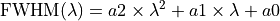
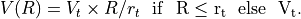

Galaxy kinematics¶
Code author: Epinat Benoit - LAM <benoit.epinat@lam.fr> & Wilfried Mercier - IRAP <wilfried.mercier@irap.omp.eu>
Fonctions related to kinematical modelling of galaxies.
-
galaxy.kinematics.apply_mask(mask, image)[source]¶ Code author: Epinat Benoit - LAM <benoit.epinat@lam.fr> & Wilfried Mercier - IRAP <wilfried.mercier@irap.omp.eu>
This function applies a mask to an image and puts nan in the masked area.
- Parameters
mask (ndarray) – array containing the indices of the pixels to be masked
image (ndarray) – image to be masked
- Returns
the masked image
- Return type
ndarray
-
galaxy.kinematics.clean_galaxy(path, outputpath, name, lsfw, fraction, clean=None, data_mask='snr', thrl=None, thru=None, option='_ssmooth', line='_OII3729')[source]¶ Code author: Epinat Benoit - LAM <benoit.epinat@lam.fr> & Wilfried Mercier - IRAP <wilfried.mercier@irap.omp.eu>
This function cleans the maps created by CAMEL for a given galaxy.
- Parameters
fraction (float) – fraction for a lower threshold on the velocity dispersion map
lsfw (float) – spectral resolution in km/s (sigma)
name (str) – name of the galaxy
ouputpath (str) – path where the ouput data will be stored
path (str) – path where the input data are stored
clean (str) – (Optional) name of the manually cleaned map. If None, no cleaned map is used to add an additional mask.
data_mask (str or list[str]) – (Optional) basename of the map used for the threshold (e.g. ‘snr’ to use the signal to noise ratio map)
line (str) – (Optional) line used (suffixe, e.g. ‘_Ha’)
option (str) – (Optional) option of CAMEL to find the files to clean (e.g. ‘_ssmooth’)
thrl (float or list[float]) – (Optional) lower threshold for cleaning. Is None, the minimum (apart from nan) will be used.
thru (float or list[float]) – (Optional) upper threshold for cleaning. Is None, the maximum (apart from nan) will be used.
- Returns
None
-
galaxy.kinematics.clean_setofgalaxies(path, filename='galsList.input', logFile='folderList.list', fraction=1.0, data_mask='snr', thrl=None, thru=None, option='_ssmooth', line='_OII3729', clean=None)[source]¶ Code author: Epinat Benoit - LAM <benoit.epinat@lam.fr> & Wilfried Mercier - IRAP <wilfried.mercier@irap.omp.eu>
Clean maps created by camel for a list of galaxies.
Note
How to use
- Provide:
a filename containing two columns: the absolute file name of every galaxy config file (thus ending with .config) and their corresponding spectral resolution in km/s (e.g. /home/wilfried/CGr114_s/o2/CGr114_101_o2.config 30).
a keyword for the additional mask (apart from the spectral width criterion), or a list of keywords
thresholds if necessary
a clean map if there is one. The same name will be used for every galaxy. Best practice would be to use an identical name for all the galaxies (located in different folders), such as ‘clean.fits’.
- Parameters
filename (str) – name of the input file containing two columns: the list of galaxies and the associated spectral resolution in km/s (sigma)
path (str) – path where the input file is stored
logFile (str) – name of of the file containing the list of the output folder names
clean (str) – (Optional) name of the manually cleaned map.If None, no clean file is used to add an another manual mask.
data_mask (str or list[str]) – (Optional) basename of the map used for threshold (e.g. ‘snr’ for signal to noise ratio map)
fraction (float) – (Optional) fraction for a lower threshold on the velocity dispersion map
thrl (float) – (Optional) lower threshold for cleaning. Is None, the minimum (apart from nan) will be used.
thru (float) – (Optional) upper threshold for cleaning. If None, the maximum (apart from nan) will be used.
option (str) – (Optional) option from camel to find the files to clean (e.g. ‘_ssmooth’)
line (str) – (Optional) line used (suffixe, e.g. ‘_Ha’)
- Returns
None
-
galaxy.kinematics.compute_velres(z, lbda0, a2=5.835e-08, a1=- 0.000908, a0=5.983)[source]¶ Code author: Epinat Benoit - LAM <benoit.epinat@lam.fr>
Compute the spectral resolution in terms of velocity sigma from the line restframe wavelength, the redshift of the source and from MUSE LSF model

- Parameters
lbda0 (float) – rest frame wavelength of the line used to infer kinematics in Angstroms
z (float) – redshift of the galaxy
a0 (float) – (Optional) lambda ** 0 coefficient of the variation of LSF FWHM with respect to lambda
a1 (float) – (Optional) lambda ** 1 coefficient of the variation of LSF FWHM with respect to lambda
a2 (float) – (Optional) lambda ** 2 coefficient of the variation of LSF FWHM with respect to lambda
- Returns
the observed (redshifted) wavelength, the LSF FWHM in Angstroms and the LSF dispersion in km/s, assuming a Gaussian shape for the LSF profile.
- Return type
float and float
-
galaxy.kinematics.create_mask(image, thrl=None, thru=None)[source]¶ Code author: Epinat Benoit - LAM <benoit.epinat@lam.fr> & Wilfried Mercier - IRAP <wilfried.mercier@irap.omp.eu>
This function creates a mask from an image using a lower and an upper threshold.
- Parameters
image (ndarray) – image used to create the mask
thrl (float) – (Optional) lower threshold
thru (float) – (Optional) upper threshold
- Returns
boolean mask (True everywhere thrl<=image<=thru)
- Return type
ndarray(bool)
-
galaxy.kinematics.velocityAtR(radius, Vt, Rt, Rlast, verbose=True)[source]¶ Code author: Wilfried Mercier - IRAP <wilfried.mercier@irap.omp.eu>
Assuming a linear ramp model, try to compute the velocity at a single radius

- Parameters
radius (int or float) – position where the velocity must be computed (in the same units as Rt and Rlast)
Vt (float) – plateau velocity
Rt (float) – radius of transition between the inner linear slope and the outer plateau
Rlast (float) – distance from the centre of the furthest pixel used in the fit
verbose (bool) – (Optional) whether print error messages or not
- Returns
the computed velocity in units of Vt and a boolean value indicating whether the computed value is reliable or not
- Return type
int or float and bool
-
galaxy.kinematics.velres_setofgalaxies(inname, outname, lbda0, a2=5.835e-08, a1=- 0.000908, a0=5.983)[source]¶ Code author: Epinat Benoit - LAM <benoit.epinat@lam.fr> & Wilfried Mercier - IRAP <wilfried.mercier@irap.omp.eu>
Compute the resolution in velocity for a list of galaxies and write it into an output file along the corresponding file name.
Note
How to use
- Provide an input and output file names and the line rest-frame wavelength in Angstroms. The input file shoudl contain the following columns:
galaxy file names
redshift of the galaxies
- Parameters
inname (str) – input file name containing the list of galaxies and their redshift. In this version, the redshift is in the name itself, as well as the line used.
outname (str) – output file name containing the list of galaxies and the spectral resolution
a0 (float) – (Optional) lambda ** 0 coefficient of the variation of LSF FWHM with respect to lambda
a1 (float) – (Optional) lambda ** 1 coefficient of the variation of LSF FWHM with respect to lambda
a2 (float) – (Optional) lambda ** 2 coefficient of the variation of LSF FWHM with respect to lambda
- Returns
None